Agnes tries be an easier Klondike variety by exposing many cards for play simultaneously. Due to how the foundations are built, it is also requires a bit more skill than most solitaire games.
Foundation:
The first card dealt to the foundation (the seed) is the rank the rest of the foundations must start with. Build 13 cards on each foundation in series and suit; Aces wrap around to Kings.
Tableau:
Same as Klondike, cards 1 rank less than the seed are played on empty spaces, and Aces wrap around to Kings.
Reserve:
Click the stock to transfer a card to each of the 7 reserve piles. The top card in any reserve pile is free to play on the tableau or a foundation.
Wastepile
The last two cards from the stock are transferred here; Both cards are playable on the tableau or a foundation.
Flower Garden
Flower Garden is a solitaire game that provides a nice mix of skill and luck. You have a good chance of besting this solitaire if you can make a blank tableau space without playing to many cards from the garden.
Foundation:
Built in series from Ace to King, in suit.
Play:
Any card from the bouquet (reserve) may be played on the foundation or garden (tableau). The top card of each garden pile may be played on the foundation or another garden pile. The garden may be built downwards, regardless of suit. Free garden spaces may be filled by any card.
Forty Thieves
Forty Thieves (aka Napoleon at Saint Helena, Roosevelt at San Juan, Big Forty) is a among the most popular two pack solitaire games. It is also one of the most notoriously difficult solitaires to win in general, requiring a great amount of skill and luck.
Foundation:
Built in series from Ace to King, in suit.
Play:
The top card of each tableau pile may be played on the foundation or another tableau. The tableau is built downwards by suit. Piles may not be moved. Free tableau spaces may be filled by any card.
Wastepile:
Click the stock to transfer 1 card to the wastepile. The top card may be played on the foundation or a tableau pile.
Freecell
Freecell is a modern solitaire game, developed for computer play. It is one of the most skillful solitaires; if you stratgize by opening as many spaces as possible early on and build long runs, you can win practically every game.
Foundation:
Built in series from Ace to King, in suit.
Play:
The top card from the tableau can be played on the foundation, another tableau pile/empty space, or a free slot in the reserve. Build the tableau downwards by alternating colors. Whole or partial runs may be moved as long as there's enough free reserve and tableau cells to move all the cards.
Golf
Golf is a simple yet addicting solitaire that allows for a bit of skill.
How to win:
Discard all cards from the tableau
Play:
Any free card one rank from the top card in the waste pile may be discarded.
Deck:
Click the deck to transfer the top card to the waste pile.
Grandfather's Clock
A pictorial solitaire game, Grandfather's Clock is a relaxing alternative to the mentally taxing solitaires like Spider or Freecell.
Foundation:
Built in series and suit up to the pile's hour position on a clock. Jacks through Kings are 11s through 13s.
Play:
The top card from the tableau may be played on the foundation or another tableau pile. The tableu is built downwards, regardless of suit.
Klondike
Klondike (also called Patience or Fascination) is one of the hardest solitaires to consistently win. Despite this, it is one of, if not the most popular solitaire game, with legions devoted to studying the odds of winning a particular game, finding strategies to overcome its cruel randomness, or just playing it as their favorite idle pastime.
Foundation:
Built in series from Ace to King, in suit.
Tableau:
The top card of each pile may be played on another tableau pile or on the foundation. Tableau piles are built downwards by alternating color. Partial or complete face up runs may be moved. Free spaces may only be filled by a King or a pile starting with a King.
Wastepile
Click the stock to transfer 3 cards to the wastepile. The top card on the wastepile may be played on the foundation or tableau. When the stock is deplected, click it to start a new stock with the remaining waste cards.
Klondike (Vegas Style)
This popular Klondike variety is no easier than its 3 card turnover brother, despite all cards in the stock always being available for play. But it is a faster solitaire to play through, so it won't take long to find a winning deal.
Foundation:
Built in series from Ace to King, in suit.
Tableau:
The top card of each pile may be played on another tableau pile or on the foundation. Tableau piles are built downwards by alternating color. Partial or complete face up runs may be moved. Free spaces may only be filled by a King or a pile starting with a King.
Wastepile
Click the stock to transfer 1 card to the wastepile. The top card on the wastepile may be played on the foundation or tableau.
Monte Carlo
Monte Carlo is a simple card matching variety of solitaire, requiring a decent mix of luck and planning to win.
How to win:
Discard all cards.
Play:
Cards horizontally, vertically, or diagonally adjacent to each other may be discarded. When play's exahausted, click the deck to collapse all empty spaces and deal cards until all five rows are full or the deck's empty.
Pyramid
Pyramid is a simple addition solitaire game, but winnable deals are exceedingly rare.
How to win:
Discard all cards.
Play:
Any pair of uncovered cards totaling 13 maybe be discarded.
Wastepile
Click the stock to move the top card to the waste and uncover the next card in the stock. The top cards of both the waste and the stock are playable.
Russian Solitaire
Russian Solitaire is perfect when you feel Yukon is too easy.
Foundation:
Built in series and suit from Ace to King
Play:
Tableau piles are built downwards by suit. Any face up tableau card can be played on the top of another tableau pile; the cards above it are also moved as one stack. Free tableau spaces can only be filled with a King.
Scorpion
Scorpion is a luck based solitaire game who's goal, like Spider, is to build single-suited runs. But unlike Spider, there's very little room for skill and a winnable deal is rare.
Foundation:
Automatically filled when an in suit run from King to Ace is completed
Play:
The top card of each tableau pile can be built on downwards, in suit. Any face up card in the tableau can be moved; when moved, the cards above it are also moved as one stack. Free tableau spaces can only be filled with a King
Reserve:
Click the reserve to deal all three cards onto the first three tableau piles.
Spider
Spider has been called the "King of Solitaires," and is rumored to have been a favorite pastime with Franklin D. Roosevelt. This 2 pack solitaire tremendously rewards skill, and while not every hand is winnable, experienced players can overcome even the nastiest of deals.
Foundation:
Automatically filled when an in suit run from King to Ace is completed
Play:
Tableau piles are built downwards, regardless of suit. The top card card of any tableau pile can be played on another tableau pile or empty space. Partial or complete in-suit runs may also be played.
Deck:
If there are no empty tableau spaces, click the deck to deal one card to each tableau pile.
Spider (1 Suite)
This version is the easy Spider. One suite Spider is great for learning the basic strategies of quickly uncovering cards and opening free spaces. It also perfect one its own as a slow, relaxing Solitaire game.
Foundation:
Automatically filled when an in suit run from King to Ace is completed
Play:
Tableau piles are built downwards, regardless of suit. The top card card of any tableau pile can be played on another tableau pile or empty space. Partial or complete in-suit runs may also be played.
Deck:
If there are no empty tableau spaces, click the deck to deal one card to each tableau pile.
Spider (2 Suite)
This is the medium difficulty Spider. While not a breeze like the one suit Spider, nearly every hand is still winnable, and its by far one of the most skill-dependant solitaire games.
Foundation:
Automatically filled when an in suit run from King to Ace is completed
Play:
Tableau piles are built downwards, regardless of suit. The top card card of any tableau pile can be played on another tableau pile or empty space. Partial or complete in-suit runs may also be played.
Deck:
If there are no empty tableau spaces, click the deck to deal one card to each tableau pile.
Spiderette
With the layout of Klondike and the gameplay of Spider, Spiderette is a much more difficult solitaire than either of its parents. Your best hope of winning is to uncover as many cards as possible early on.
Foundation:
Automatically filled when an in suit run from King to Ace is completed
Play:
Tableau piles are built downwards, regardless of suit. The top card card of any tableau pile can be played on another tableau pile or empty space. Partial or complete in-suit runs may also be played.
Deck:
If there are no empty tableau spaces, click the deck to deal one card to each tableau pile.
Tri Towers
Tri-Towers (aka Tri Peaks) is a modern solitaire; like Freecell, it was designed to be played on a computer. Given it's simplicity, fast play, and reliance on luck, it's often seen in casino game machines and bars.
How to win:
Discard all cards from the towers
Play:
Any free card one rank from the top card in the waste pile may be discarded. Kings may be placed on Aces, and vice-versa.
Deck:
Click the deck to transfer the top card to the waste pile.
Will O' The Wisp
Will O' The Wisp makes Spiderette easier by starting with less buried cards. But it's still one of the more difficult Solitaires, requiring great skill and luck.
Foundation:
Automatically filled when an in suit run from King to Ace is completed
Play:
Tableau piles are built downwards, regardless of suit. The top card card of any tableau pile can be played on another tableau pile or empty space. Partial or complete in-suit runs may also be played.
Deck:
If there are no empty tableau spaces, click the deck to deal one card to each tableau pile.
Yukon
Yukon is a blend of two solitaire games, Klondike and Scorpion. Despite its two parents being mostly luck-based, Yukon itself is a largely skill-based solitaire.
Foundation:
Built in series and suit from Ace to King
Play:
Tableau piles are built downwards by alternating color. Any face up tableau card can be played on the top of another tableau pile; the cards above it are also moved as one stack. Free tableau spaces can only be filled with a King.
Play classic solitaire card games in your browser, including Klondike, Freecell, Spider, Pyramid, Golf, Yukon, Forty Thieves, and more. This site is for casual entertainment only. No real-money gambling, wagering, cash prizes, or financial rewards are involved.
Agnes Solitaire
Agnes feels familiar if you know Klondike, but it has one twist that changes the whole rhythm of the game: the foundations do not always start with Aces. The first card dealt to the foundation is the seed rank, and every foundation has to start with that same rank. From there, each foundation builds upward in suit, wrapping from King back to Ace when needed. That means a foundation might run 7, 8, 9, 10, Jack, Queen, King, Ace, 2, and so on until all thirteen cards of that suit are placed.
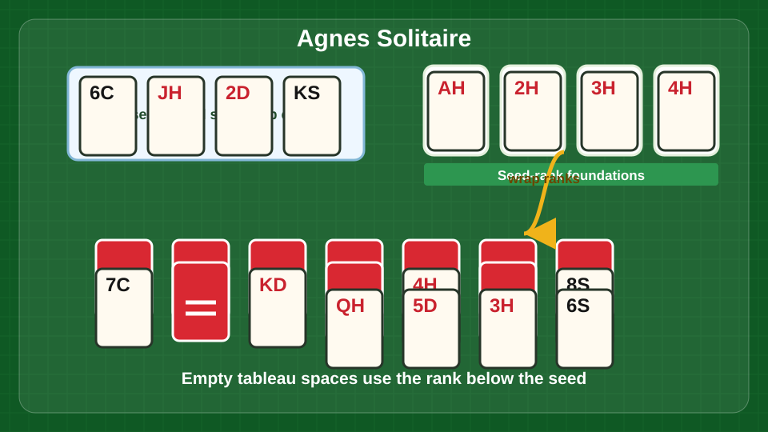
Seed foundations define the starting rank. Deal reserve cards carefully, then use tableau spaces around the seed rank.
The tableau works much like Klondike. Build down by alternating colors, move face-up runs when they fit, and use empty spaces carefully. Empty tableau spaces are not always filled by Kings. In Agnes, the card one rank below the seed belongs in an empty space, with the same wraparound logic. If the seed is a 7, for example, empty spaces want 6s. That single rule catches a lot of new players.
The reserve is where Agnes gets interesting. When you click the stock, one card is dealt to each of seven reserve piles. The top card of each reserve pile is playable to the tableau or the foundations. Those reserve cards give you a lot of options, but they can also bury important cards if you deal too quickly. Before touching the stock, scan the board for foundation moves, tableau moves, and chances to uncover face-down cards.
The best Agnes strategy is to keep the tableau flexible. Do not rush every foundation card upward just because it is available. Sometimes a low card in the tableau is holding a run together, or it gives you a place to move a card out of the reserve. Try to open tableau spaces early, but only when you know which rank can legally fill them. A blank space that cannot be used is just dead air.
Beginners usually make two mistakes: they forget the seed-rank rule for empty spaces, and they deal the reserve before using the cards already available. Play Agnes slowly for the first few hands. It rewards the player who looks one move ahead. The fun part is that it gives you more visible cards than Klondike, so losses feel less random. When a win comes together, it feels like you actually steered the hand instead of waiting for the deck to be kind.
Flower Garden
Flower Garden is one of those solitaire games that looks calm at first and then quietly asks you to make smart choices every turn. The tableau is called the garden, and the reserve is called the bouquet. Your goal is to build the four foundations from Ace to King in suit. The top card of each garden pile can move to a foundation or onto another garden pile. Any card from the bouquet can also be played, which makes the reserve feel more open than in many solitaire games.
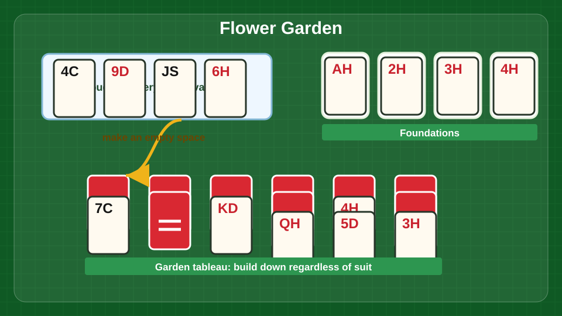
Use bouquet cards to open garden spaces, then feed Aces through Kings to the foundations.
The garden builds downward regardless of suit. That is forgiving, but not free. Because suits do not matter in the tableau, it is easy to stack cards just because they fit. The better habit is to ask what the move opens. Does it uncover a useful card? Does it clear a pile? Does it give a buried Ace or Two a path to the foundation? If the answer is no, leave the move alone for now.
Empty garden spaces are the most valuable feature in Flower Garden. Any card can fill an empty space, which gives you room to reorganize ugly piles and rescue trapped cards. A good early target is to clear one garden pile without draining the bouquet too quickly. Once you have a space, you can move cards around with much more control.
The bouquet is tempting because every card there is available, but beginners often play too many bouquet cards too soon. That can crowd the garden and block the exact cards you need later. Try to use bouquet cards to complete foundation sequences, create empty spaces, or support a clear plan. If a bouquet card only creates a taller messy pile, it can usually wait.
Winning Flower Garden comes down to timing. Build foundations when the move releases pressure, but avoid stripping away cards that are useful in the garden. Keep an eye on low cards first, especially Aces, Twos, and Threes. If those are trapped, the foundations stall. If they are free, the game opens up nicely.
The charm of Flower Garden is its balance. It gives you enough open information to feel fair, but enough risk to keep every hand interesting. It is a good choice when you want a thoughtful game that does not feel as punishing as Forty Thieves or as mechanical as basic Klondike.
Forty Thieves
Forty Thieves is a tough two-deck solitaire game, and it does not pretend otherwise. The goal is to build eight foundations from Ace to King in suit. The tableau starts with ten piles, and only the top card of each pile is available. Tableau piles build downward by suit, and you can move only one card at a time. Empty tableau spaces may be filled by any card.
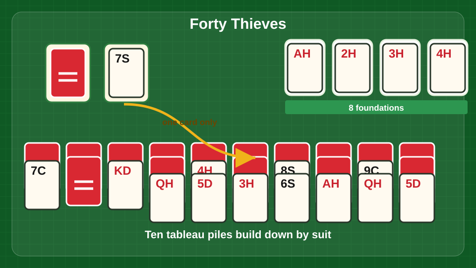
Move one card at a time, build down by suit, and treat empty spaces like premium work areas.
That "one card at a time" rule is the heart of the game. In Klondike or Spider, moving runs can fix a lot of trouble. In Forty Thieves, every buried card has to be earned one careful move at a time. The stock deals one card to the waste, and the top waste card can move to the tableau or foundation. Once a waste card is covered, it may be gone for a long time, so stock timing matters.
The best strategy is to build foundations steadily without overcommitting the tableau. Aces and Twos should usually go up quickly, because they create foundation lanes. But do not throw every card to the foundation automatically. A 7 of Hearts, for example, might be needed to hold the 6 of Hearts and 5 of Hearts in the tableau. If you move it away too early, you may lose your only organizing path.
Empty spaces are precious. Use them to pull down important waste cards, temporarily park blockers, or start a suit sequence that frees hidden cards. Because any card can fill an empty space, the mistake is not filling it; the mistake is filling it with a card that does not help. Favor cards that let you immediately move another card or reveal a blocked pile.
Beginners usually lose Forty Thieves by treating the stock like a simple draw pile. Before each draw, check the tableau and foundations. If the current waste card can be used in a meaningful way, use it. If it cannot, make sure there is no setup move that would let you use it. Once it is covered, you may not see that chance again.
The fun of Forty Thieves is the pressure. It is not a breezy solitaire variant. It feels like a patient little puzzle where every empty space matters and every suit sequence is a small victory. When you win, it feels earned because the game gives very little away.
Freecell
Freecell is one of the fairest solitaire games because almost every deal can be won with good play. The goal is simple: build the four foundations from Ace to King in suit. The tableau builds downward by alternating color, and the open cells at the top act as temporary parking spots. A card can move from the tableau to a foundation, to another tableau pile, to an empty tableau column, or into a free cell.
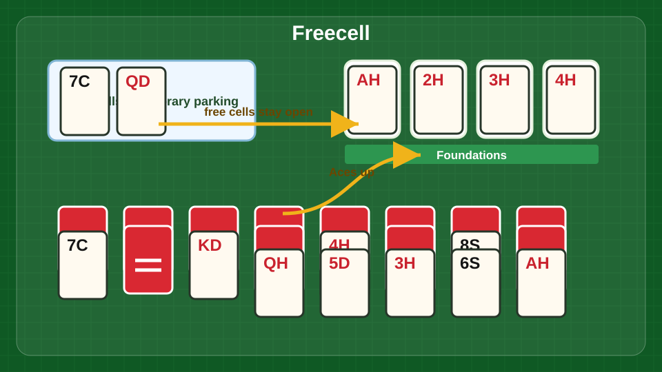
Keep free cells open, build alternating runs, and use empty columns to move longer sequences.
The important thing to understand is that the free cells are not storage units. They are breathing room. Every time you fill one, your ability to move long runs gets smaller. The game lets you move a run only when you have enough open cells and empty columns to make that move possible. So the more space you keep open, the stronger your position becomes.
Good Freecell play starts with finding the Aces and low cards. If an Ace is buried under a short stack, clear a path. If it is buried under a long stack, look for the cards that can move out of the way without clogging every free cell. Empty columns are even more powerful than free cells because they let you shift whole sequences and rebuild the board. Try to create an empty column early, then protect it.
Build long alternating-color runs in the tableau, but do not build them blindly. A beautiful run can still be a trap if it buries a card you need for the foundation. Before moving a card, check what is underneath and what the move unlocks. The best moves usually either reveal a hidden low card, create an empty column, or reduce the number of cards sitting in free cells.
Common beginner mistakes include filling all four free cells too quickly, moving cards to the foundation without checking whether they are still useful, and breaking up good runs for no reason. If you get stuck, undo a few moves and try to keep one more free cell open. That one cell often changes everything.
Freecell is fun because it feels like skill matters. You are not waiting for a stock card or hoping the next deal is kinder. The whole puzzle is in front of you, and the satisfaction comes from making room where there was none.
Golf Solitaire
Golf is fast, simple, and better than it looks on the first hand. The goal is to clear every card from the tableau. You play cards from the tableau onto the waste pile if they are one rank higher or one rank lower than the current waste card. Suits do not matter. In this version, play follows the project rule shown in the game: any free card one rank away from the waste card may be discarded, and the deck turns over one new waste card at a time.
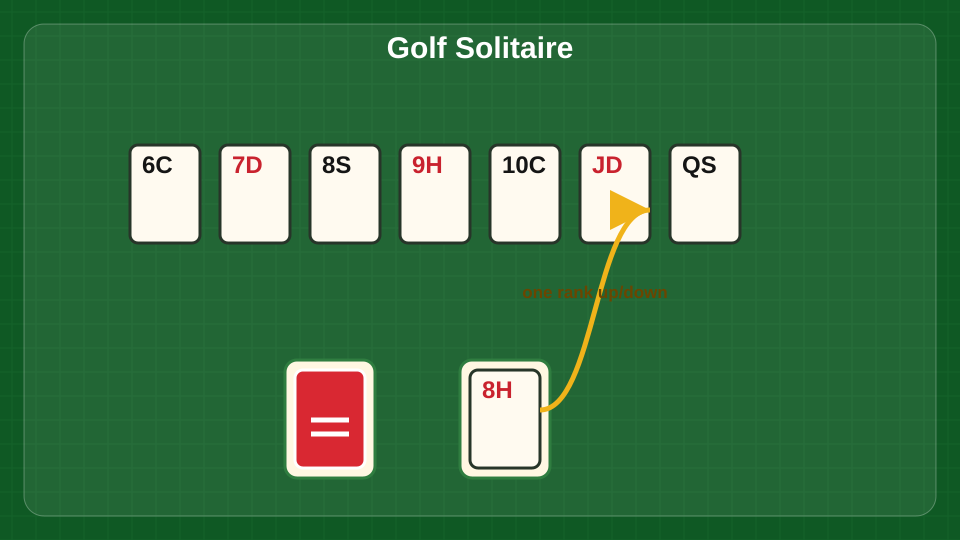
Clear free tableau cards one rank above or below the waste card before drawing again.
The key word is "free." A card can only be played if it is not covered by another card. That makes Golf more about sequencing than speed. If you have a choice between two playable cards, pick the one that uncovers more cards or creates a longer chain. For example, if the waste is a 7 and you can play either a 6 or an 8, look at what each move opens. A 6 might lead to 5, 4, 3, while the 8 might stop immediately.
A strong Golf habit is to scan for runs before clicking. Look for stretches like 9, 8, 7, 6 or Queen, Jack, 10, 9. Sometimes the best move is not the most obvious card but the one that starts a longer downhill or uphill path. Since every new stock card is limited, a long chain from the tableau saves draws and gives you a real chance to clear the board.
Beginners usually make two mistakes. First, they play the first available card without checking the board. Second, they draw from the deck while a playable tableau card is still available. Drawing too soon can waste the exact bridge card you needed.
Golf has a nice casual rhythm because the hands are quick. It is a good game when you want a low-pressure puzzle that still gives you room to improve. The fun comes from those satisfying runs where five or six cards fall away in a row and the board suddenly looks open. Even when a hand does not work out, it is short enough that dealing again feels easy.
Grandfather's Clock
Grandfather's Clock is a relaxed solitaire game with a neat visual idea: the foundations form a clock face. The goal is to build each foundation in suit until it reaches its hour position. Jacks, Queens, and Kings count as 11, 12, and 13. Instead of every foundation ending at King, each pile has its own target based on where it sits on the clock.
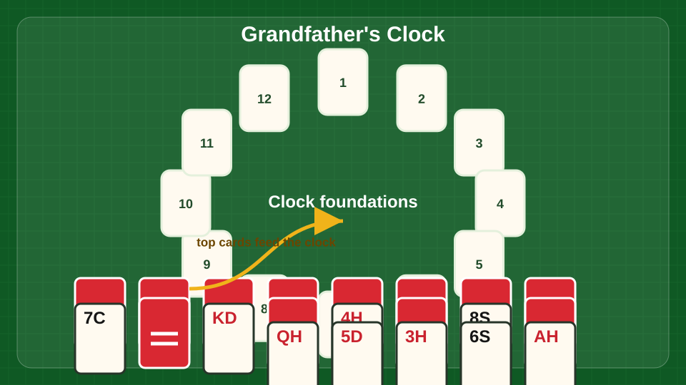
Build each suit foundation around the clock face until it reaches the matching hour.
The tableau builds downward regardless of suit. The top card of each tableau pile can move to a foundation or onto another tableau pile. Because suits do not matter in the tableau, you get more freedom than in strict games like Forty Thieves. Still, the foundations are suit-based, so you need to pay attention to which suit each clock position needs.
A good strategy is to learn the clock targets early. If a foundation needs to end on a 9, do not treat that pile the same way you would treat a normal Ace-to-King foundation. Build foundations when the next card is available, but keep tableau flexibility in mind. Since tableau building ignores suit, you can often create temporary stacks that uncover the cards you need.
The best moves are the ones that reveal new top cards. If two moves are available, prefer the one that empties or shortens a tableau pile. The more top cards you can see, the easier it is to feed the clock. Avoid making long stacks that bury cards under ranks you cannot move soon.
Beginners often lose track of the foundation targets and move cards around as if this were plain Klondike. Another common mistake is ignoring the suit requirement on the clock piles. The tableau may be casual about suits, but the foundations are not.
Grandfather's Clock is fun because it has personality. The clock layout gives the game a little story, and the rules are gentle enough for an easy session. It is a good mode for players who want something more unusual than Klondike without jumping into a hard puzzle like Spider or Russian Solitaire.
Klondike
Klondike is the classic solitaire most people learned first. The goal is to build four foundations from Ace to King in suit. The tableau builds downward by alternating color, and face-up runs can be moved as a group. Empty tableau spaces can only be filled by a King or a run that starts with a King. In the standard version here, the stock turns over three cards at a time to the waste.
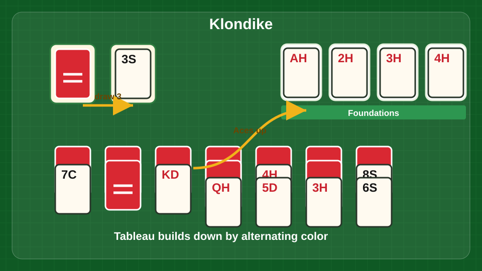
Turn stock cards to the waste, uncover tableau cards, and build foundations from Ace to King.
The first priority is uncovering face-down cards. Every hidden card is information you do not have, so moves that flip a new card are usually stronger than moves that simply tidy the tableau. If you can choose between moving a 6 onto a 7 or moving a card that reveals a face-down card, reveal the card unless there is a clear reason not to.
Foundations are important, but do not rush them blindly. A low card that goes to the foundation is usually safe, especially Aces and Twos. Higher cards can sometimes be useful in the tableau for moving alternating-color runs. Before sending a card up, ask whether it is currently needed as a landing spot.
The three-card waste makes planning harder. Pay attention to the order of waste cards as you cycle through the stock. Sometimes skipping a playable waste card is correct because it changes which cards become reachable on the next pass. If the game allows unlimited passes, patience pays. If you are playing with stricter rules elsewhere, stock order becomes even more important.
Common beginner mistakes include filling an empty space with the first King available, moving cards to the foundation too aggressively, and ignoring hidden cards. A King space should help you uncover more cards or organize a useful run. If it just creates a dead column, wait.
Klondike is still fun because it has that perfect mix of luck and small decisions. Some deals are rough, but good habits noticeably improve your chances. A clean win feels satisfying because the board slowly turns from clutter into order.
Klondike One-Card / Vegas Style
Klondike one-card, labeled Vegas Style in this project, uses the same basic layout as classic Klondike but deals one card at a time from the stock to the waste. The goal is still to build the foundations from Ace to King in suit. The tableau builds downward by alternating color, face-up runs can move together, and empty spaces require Kings or King-led runs.
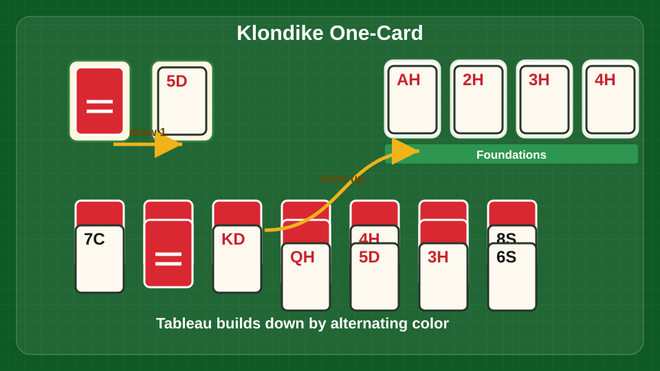
One-card draw gives more waste access, but the tableau still needs careful King spaces.
Because the stock reveals one card at a time, this version feels faster and more direct than three-card Klondike. You see more usable waste cards, so the game gives you more chances to act. That does not mean every hand is easy. The tableau can still lock up, and careless foundation moves can still remove cards you need for building.
The best strategy starts with the same rule as classic Klondike: uncover face-down cards. A move that flips a hidden card is usually worth more than a move that simply shifts a visible card around. Open columns are powerful, but only when you have a King ready to use them well.
With one-card draw, it is tempting to play every waste card as soon as it appears. Slow down a little. If a waste card can move to the tableau and reveal more cards later, great. If it only clutters a column, consider leaving it. The waste is easier to access in this mode, so you do not need to panic-play every card.
Beginners often mistake "more available cards" for "no planning needed." That is how good boards get jammed. Watch your color balance. If you use all your red 7s, for instance, black 6s may have nowhere to go. Also be careful with empty spaces. A King that starts a long useful run is much better than a lonely King that blocks the column.
The fun of one-card Klondike is speed. You get the familiar feel of classic solitaire with fewer stock frustrations. It is a great everyday mode when you want something recognizable, quick, and still satisfying to win.
Monte Carlo
Monte Carlo is a matching solitaire game, not a foundation-building game. The goal is to discard every card by removing pairs of the same rank. Cards can be paired when they are horizontally, vertically, or diagonally adjacent. When no more useful pairs are available, clicking the deck collapses the layout, closes gaps, and deals new cards until the rows are full or the deck is empty.
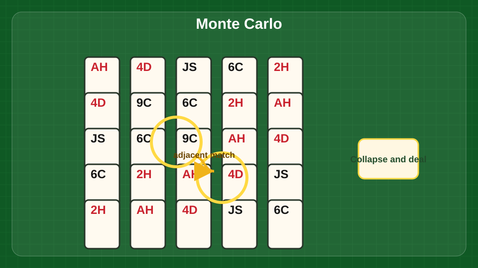
Remove adjacent matching ranks, then collapse the grid and deal fresh cards into the gaps.
The basic rule is easy, but good Monte Carlo play is about choosing which pair to remove first. If two pairs are available, look at what each one does to the board. Removing a pair in the middle can pull cards together after the next deal and create new matches. Removing an edge pair may be safe, but it might not change much.
Try to think one collapse ahead. Empty spaces are not filled immediately by sliding individual cards; the board compacts when you deal. That means the shape of the gaps matters. If you can create gaps that bring matching ranks closer together, you improve your next position. Pairs that open the board are usually better than pairs that leave isolated cards behind.
Beginners often remove matches randomly because the game looks simple. That works sometimes, but it wastes the main bit of strategy Monte Carlo gives you. Another mistake is clicking the deck too soon. Before dealing, scan all eight directions around every card. Diagonal pairs are easy to miss, especially near the center of the board.
Since there are no foundations, Monte Carlo has a different pace from Klondike or Freecell. It feels more like a small pattern puzzle. You are hunting for pairs, shaping the board, and hoping the next collapse brings the right cards together.
The fun feature is the cleanup moment. When the board collapses and new cards slide in, the whole puzzle changes at once. A bad-looking layout can suddenly open, and a good one can get tricky fast. That keeps hands short, readable, and easy to replay.
Pyramid
Pyramid is a pairing game where the goal is to discard all cards. The pyramid layout covers some cards with others, so only uncovered cards are available. Remove pairs that total 13. Aces count as 1, Jacks as 11, Queens as 12, and Kings as 13. Kings can be removed by themselves because they already total 13.
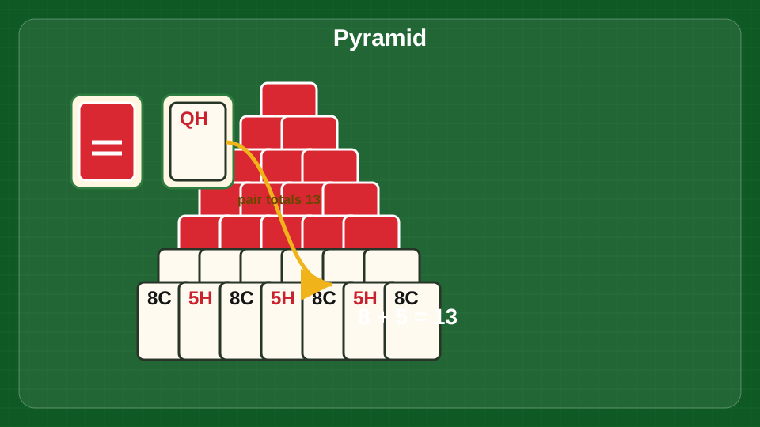
Pair uncovered cards that total 13. Kings clear alone because they already equal 13.
The stock and waste give you extra cards to pair with the pyramid. In this version, clicking the stock moves a card to the waste, and the top cards of both the waste and stock are playable according to the project rules. The main challenge is deciding which pyramid cards to free first.
A strong Pyramid strategy starts with buried blockers. Look for cards that cover two other cards, especially in the lower rows. Removing a pair from the bottom can unlock more options than removing a pair near the top. If you can choose between two 8s to pair with a 5, use the 8 that frees more cards or exposes a King.
Do not pair cards just because they add to 13. Ask what the pair opens. Also watch duplicate ranks. If three Queens are visible and only one Ace is accessible, you may need to save that Ace for the Queen that blocks the most important part of the pyramid.
Beginners usually make the stock the center of the game. The stock helps, but the pyramid is the real problem. If you burn through stock cards without clearing covered pyramid cards, you can run out of useful partners. Another common mistake is forgetting that Kings can leave immediately. Removing a free King often opens space without costing another card.
Pyramid is fun because it is simple enough to play casually but sharp enough to punish careless moves. Winnable hands can feel rare, which makes a clean board especially satisfying. It is a good mode when you want quick arithmetic, a little luck, and the nice snap of finding the exact pair you needed.
Russian Solitaire
Russian Solitaire is a stricter, tougher cousin of Yukon. The goal is to build foundations from Ace to King in suit. Tableau piles build downward by suit, not by alternating color. Any face-up card can move onto another tableau pile if the move is legal, and the cards above it move along as one stack. Empty tableau spaces can only be filled with a King.
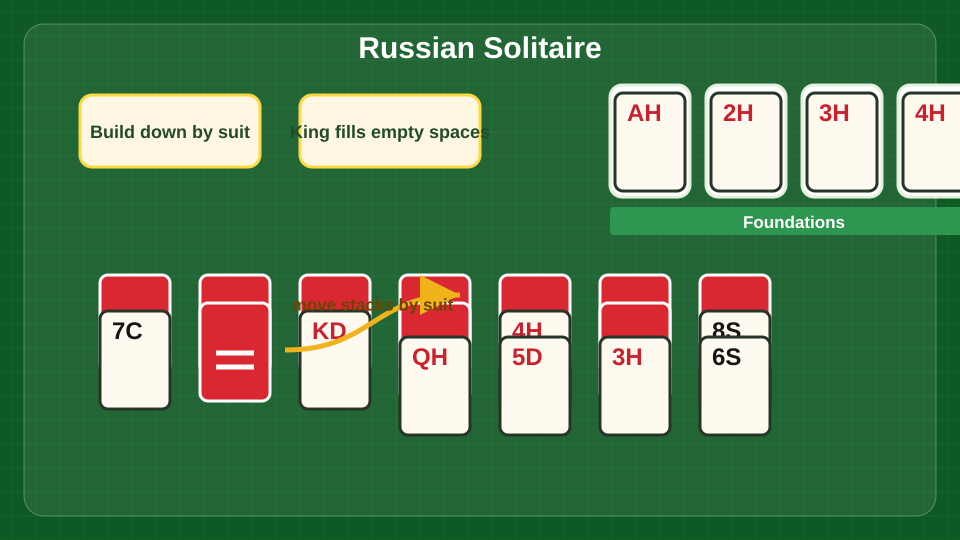
Move face-up stacks, but build tableau piles down by suit and reserve empty spaces for Kings.
That freedom to move any face-up card is powerful, but the suit rule makes the game difficult. You cannot casually place a red 6 on a black 7. You need the 6 of the same suit to go on the 7. This creates bottlenecks, especially when key cards are buried under mismatched stacks.
The main strategy is to uncover face-down cards while preserving suit lanes. If you see a run forming in one suit, protect it. A clean suit sequence can move as a block and eventually feed the foundation. Mixed stacks may be legal to drag because of the selected card, but they can become awkward if the cards above it have no future home.
Empty spaces are rare and valuable. Since only Kings can fill them, do not clear a column unless you have a useful King ready or a plan to expose one. A good King space can help you move a long stack and uncover hidden cards. A bad one can sit empty while the rest of the tableau remains stuck.
Beginners often approach Russian Solitaire like Yukon and forget the suit restriction. That leads to frustration fast. Another mistake is moving a face-up card simply because the game allows it. Every moved stack changes access to the cards underneath, so check whether the move improves your position.
Russian Solitaire is fun because it feels demanding in a clean way. The rules are not complicated, but they are unforgiving. When you finally connect a same-suit sequence and send a run toward the foundations, it feels like cracking open a locked board.
Scorpion
Scorpion has a Spider-like goal: build complete in-suit runs from King down to Ace. When a full run is completed, it clears automatically to the foundation. Tableau piles build downward by suit, and any face-up card can be moved, carrying the cards above it as a stack. Empty spaces can only be filled with Kings. The reserve deals three final cards onto the first three tableau piles when clicked.
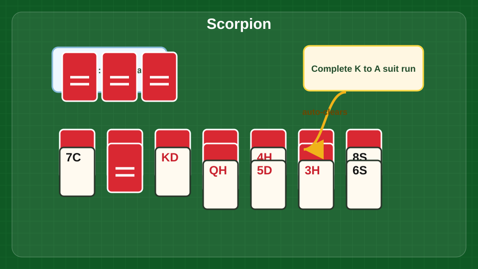
Build same-suit King-to-Ace runs. Use the reserve only after the tableau has stalled.
The game looks open because many cards are face up, but it is tougher than it first appears. Since building is by suit, you need exact matches. A 7 of Spades needs the 8 of Spades. Close enough does not count. That makes every same-suit connection valuable.
The best strategy is to expose hidden cards early without breaking useful suit order. If you can move a stack and reveal a face-down card, that is usually worth considering. But do not bury a nearly complete run under unrelated cards unless it opens something important. Clean suit runs are your path to clearing space.
The reserve should not be clicked automatically. Those three cards can help, but they can also land on piles you were trying to organize. Use the reserve when the tableau has stalled or when you have enough structure to absorb the new cards. Before clicking it, make every useful move already available.
Beginners often move large stacks because it feels satisfying, then realize they have covered a critical card. Another common mistake is clearing a space without a King ready. Since only Kings can fill empty spaces, a blank column is useful only if it helps you relocate a King-led stack.
Scorpion is fun for players who like tough solitaire without a stock cycle. Most of the puzzle is visible, so you can see the trouble coming. Winning feels good because the final runs clear in big chunks, and the board can go from tangled to finished surprisingly quickly once the right suit chains line up.
Spider Solitaire
Spider is the big two-deck solitaire challenge. In the main Spider mode, all four suits are used. The goal is to build complete in-suit runs from King down to Ace. A completed run clears automatically. Tableau piles build downward regardless of suit, but only in-suit sequences can move together as a run. You can move the top card of a pile, place cards on the next higher rank, and deal a new row from the deck when there are no empty tableau spaces.
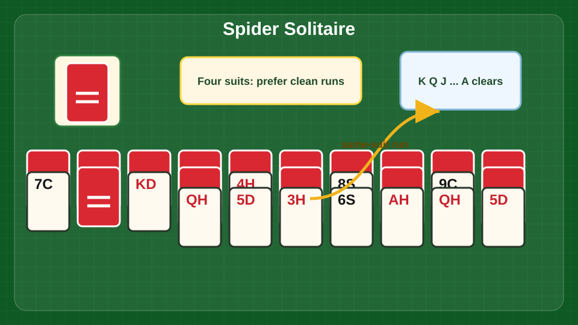
Build down by rank, prefer same-suit sequences, and clear complete King-to-Ace runs.
The distinction between building and moving is everything. You may place a 7 of Hearts on an 8 of Clubs, but that mixed-suit connection will not move as a clean run. If you build the 7 of Hearts on the 8 of Hearts, that sequence becomes much more useful. Good Spider play is about turning messy rank stacks into clean suit stacks.
Your first goal is to uncover face-down cards. The second is to create an empty column. Empty columns are powerful workspaces where you can reorganize stacks, move Kings, and rebuild suits. Try not to give up an empty column unless the move reveals cards or creates a better column.
Before dealing from the deck, make every useful tableau move you can. A new deal adds one card to every pile, which can bury good structure under awkward cards. Sometimes you must deal, but dealing too early is the classic Spider mistake.
Beginners also overbuild mixed suits. Mixed stacks are sometimes necessary, especially early, but too many of them make the board stiff. Whenever possible, choose same-suit builds over mixed builds, even if the immediate move looks smaller.
Spider is fun because it rewards patience. A hopeless-looking board can slowly open if you protect empty spaces and build clean runs. The four-suit version is hard, but that is the appeal. It gives experienced players a real puzzle with a satisfying finish.
Spider One Suit
Spider One Suit is the friendly version of Spider. The goal is still to build complete King-to-Ace runs and clear them from the board, but every card belongs to the same suit. That means every downward sequence is also a movable sequence. You do not have to worry about mixing suits, which makes the game much easier to read.
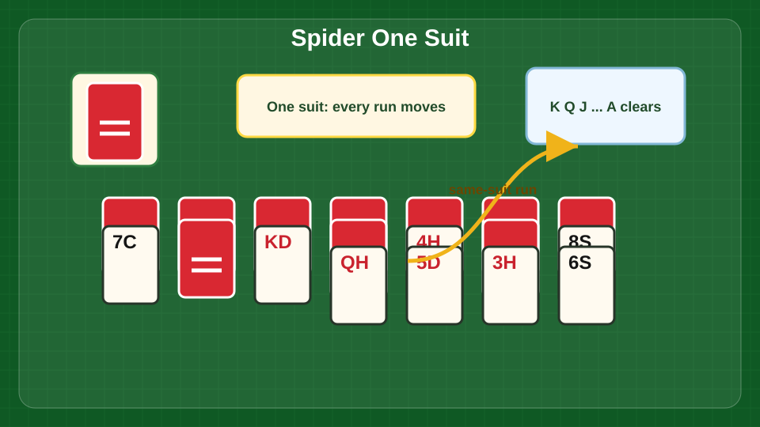
Every sequence is same-suit, so focus on empty columns and full King-to-Ace runs.
The tableau builds downward by rank. Move cards and runs to uncover hidden cards, create empty columns, and assemble full King-through-Ace sequences. When no tableau moves are useful and every pile has at least one card, click the deck to deal a new row.
Because the suit problem is removed, the main skill is space management. Empty columns are still excellent. Use them to move long runs, park Kings, and uncover face-down cards. Try to create at least one empty column before the later deals if you can. It gives you control when the board gets crowded.
Do not deal too early. Even in the easy version, a new row can cover useful cards and make simple runs harder to finish. Before dealing, check for hidden cards you can uncover and runs you can extend. If a move creates an empty column or flips a card, it is usually worth doing.
Beginners sometimes rush to build long runs in one place while ignoring buried cards elsewhere. A nearly complete run is nice, but the game cannot finish until all the cards are available. Spread your attention across the tableau and keep opening new cards.
Spider One Suit is fun because it gives the satisfying feel of Spider without the heavy punishment of four suits. It is great for learning the rhythm of the game: uncover, organize, create space, then deal. It also works as a relaxing mode when you want big card-clearing moments without a long fight.
Spider Two Suit
Spider Two Suit sits right in the sweet spot between relaxing and serious. It uses two suits instead of one or four, so suit planning matters, but the game is not as punishing as full Spider. The goal is to complete in-suit runs from King down to Ace and clear them from the tableau.
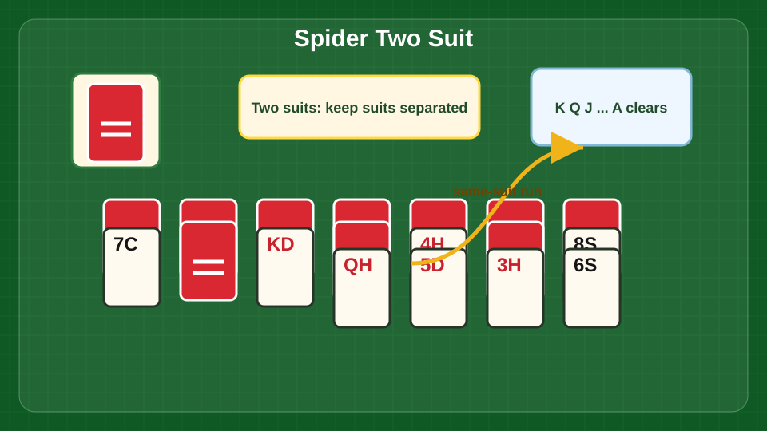
Separate the two suits early so your long runs can move cleanly.
Tableau piles build downward regardless of suit. A 6 can go on any 7. But only same-suit sequences can move together as runs. That means a mixed stack may help for the moment but cost flexibility later. When you have a choice, build same-suit sequences. They are the backbone of winning Spider.
Early in the hand, focus on uncovering face-down cards and creating an empty column. Empty columns let you rearrange sequences and separate the two suits. Once you have a workspace, the game becomes much more manageable. Protect that space unless spending it clearly improves the board.
Before every deck deal, do a full scan. Can you extend a same-suit run? Can you move a top card to reveal a hidden one? Can you clear a column? New cards can help, but they also cover your current structure. Good players deal only after squeezing useful moves out of the tableau.
Beginners often treat Two Suit like One Suit and build anything anywhere. That works for a while, then the board fills with mixed runs that cannot move. Another mistake is leaving low cards scattered where they block Kings and Queens. Try to keep sequences organized by suit as early as possible.
The fun of Spider Two Suit is that it feels winnable while still asking you to think. You get real strategy, real recovery chances, and plenty of satisfying run clears. For many casual players, this is the best everyday Spider mode.
Spiderette
Spiderette combines the layout size of Klondike with Spider-style rules. The goal is to build in-suit runs from King down to Ace. Completed runs clear automatically. Tableau piles build downward regardless of suit, but only in-suit sequences move together cleanly. You can deal new cards from the deck when every tableau pile has at least one card.
A smaller Spider layout: uncover cards fast and protect any empty column you create.
Because Spiderette uses fewer cards than full Spider, every move matters. There is less room to hide from a bad decision. The early goal is to uncover face-down cards as quickly as possible. If a move flips a hidden card, it deserves attention. If it also keeps a same-suit sequence together, even better.
Empty spaces are extremely useful. They let you move Kings, rearrange stacks, and rebuild mixed piles into clean suit runs. Try to create an empty column before dealing if the board allows it. Once new cards land, the tableau can get cramped fast.
The same-suit rule is the main strategy point. You may build mixed suits to keep the game moving, but you should always be looking for chances to convert mixed stacks into clean runs. Same-suit sequences are easier to move and eventually clear.
Beginners often deal too soon. In Spiderette, a new deal can bury your best opportunities under a row of blockers. Before clicking the deck, check every pile for moves that uncover cards, clear a space, or improve a suit run. Another mistake is treating the game like Klondike. There are no Ace-to-King foundations here; the goal is King-down runs.
Spiderette is fun because it delivers Spider thinking in a smaller package. Hands move faster than full Spider, but the decisions still feel meaningful. It is a strong mode when you want a real puzzle without committing to a long four-suit battle.
Tri Towers
Tri Towers, also known as Tri Peaks, is a fast solitaire game built around clearing cards that are one rank away from the waste card. The goal is to remove every card from the three towers. Suits do not matter. If the waste card is a 9, you can play an 8 or a 10. In this version, Kings can be placed on Aces and Aces on Kings, which makes wraparound runs possible.
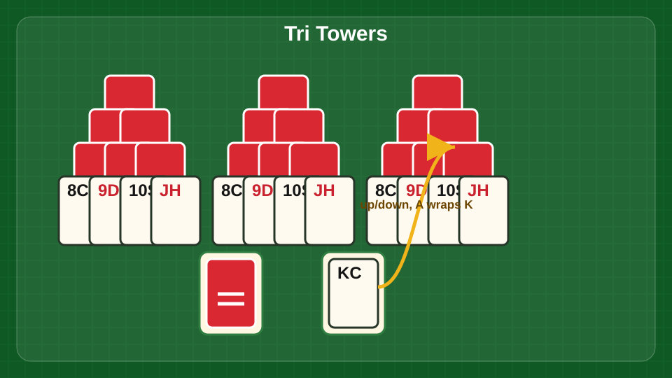
Clear exposed tower cards one rank up or down from the waste. Kings and Aces connect.
Only free cards can be played. A card is free when no other card covers it. That makes the towers a little puzzle of timing. You are not just looking for any playable card; you are looking for the card that opens the best next move.
The strongest strategy is to build long chains. Before playing a card, scan for a route: 6, 7, 8, 9, 10, Jack, or Queen, King, Ace, 2. Wraparound can rescue a run, so remember that Ace and King connect. If two cards are playable, pick the one that uncovers more cards or continues a longer chain.
Do not draw from the deck while a useful tower card is available. Every stock card is a chance, and wasting one can strand the last few covered cards. At the same time, do not play a tower card that kills a better chain unless you have no choice.
Beginners often clear easy edge cards first and leave the deep center cards covered. Focus on uncovering the cards that block the largest parts of the towers. The more cards you free, the more likely you are to build a long run.
Tri Towers is fun because it is quick and punchy. A good chain feels great, especially when the wraparound rule lets you keep going through King and Ace. It is a perfect mode for short sessions, but there is enough strategy in choosing the right path that better play really shows.
Will O' The Wisp
Will O' The Wisp is a Spiderette-style solitaire game with a friendlier starting layout. The goal is to build complete in-suit runs from King down to Ace and clear them from the board. Tableau piles build downward regardless of suit, but only in-suit sequences can move as clean runs. The deck deals a new row when every tableau pile has at least one card.
A smoother Spiderette start with fewer buried cards, but same-suit runs still matter.
Compared with Spiderette, this mode starts with fewer buried cards, so you get more information early. That does not make it automatic. You still need to protect same-suit runs, uncover hidden cards, and create working space before the deck deals make the board crowded.
Start by looking for moves that reveal face-down cards. More visible cards means better planning. Next, favor same-suit builds over mixed-suit builds whenever possible. A mixed stack may be fine for a temporary move, but same-suit sequences are the ones that move freely and eventually clear.
Empty columns are valuable because they give you room to sort. Use them to move Kings or break apart mixed stacks. Try not to fill an empty column with a card that does not help reveal something or build a strong sequence.
Beginners often underestimate the game because the opening position looks generous. Then they deal too early and cover the useful cards. Before dealing, make sure you have played every move that uncovers cards, improves suit order, or creates space.
The fun of Will O' The Wisp is that it feels like a more approachable Spider puzzle. You get the pleasure of building and clearing long runs without the full weight of a two-deck Spider layout. It is a good mode for players who like Spiderette but want a slightly smoother start.
Yukon
Yukon plays like Klondike with the stock removed and the tableau opened up. The goal is to build the foundations from Ace to King in suit. Tableau piles build downward by alternating color, and any face-up card can be moved onto a legal card, carrying the cards above it along as a stack. Empty tableau spaces can only be filled with Kings.
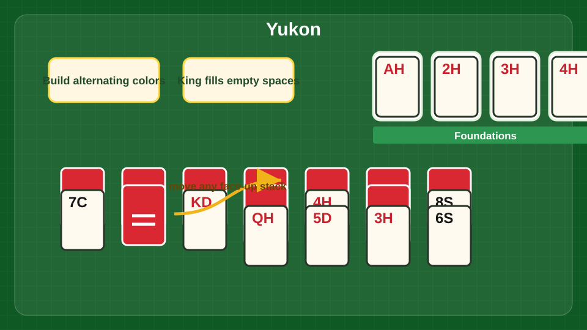
Move any face-up card with its stack, uncover hidden cards, and fill empty spaces with Kings.
The freedom to move any face-up card makes Yukon feel generous, but it can also create messy stacks. Since the cards above the moved card come along for the ride, you can end up dragging clutter around the board. Good Yukon play means using that freedom to uncover hidden cards, not just to make every legal move.
Start by finding buried Aces and low cards. Foundations cannot move without them. If a move reveals a face-down card, it is usually strong. If it simply shifts a stack without uncovering anything, check whether it improves your future options before making it.
Empty spaces are powerful but limited. Only Kings can fill them, so clear a column when you have a useful King-led stack ready. A good empty-space move can reorganize half the board. A careless one can leave a column empty while the tableau remains blocked.
Beginners often move giant stacks because the game allows it. That can bury important cards under a pile that is hard to move again. Another mistake is sending cards to the foundation too early. Low cards are usually safe, but higher cards may still be needed as landing spots in the tableau.
Yukon is fun because it gives you more control than Klondike. There is no stock to wait on; the puzzle is right there. It rewards careful untangling, and when the board opens, it opens dramatically.